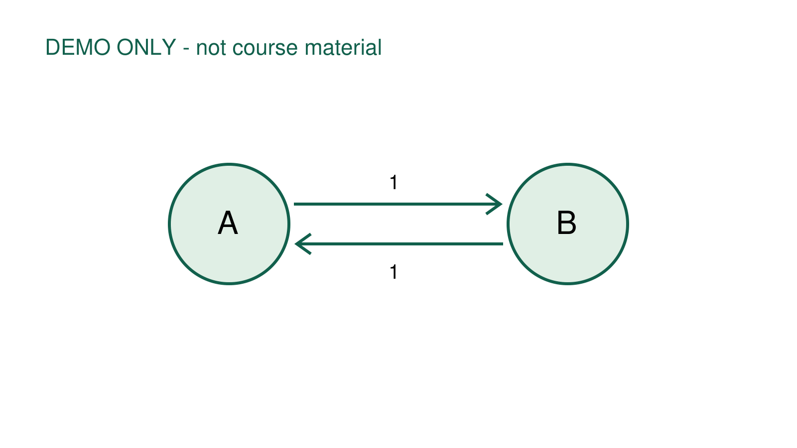

图文复习页演示
这是离线 HTML 生成器的合成示例，不代表任何课程或考试范围。
看图与解释

图直接由示例 PDF 渲染。点击图片放大。打开原 PDF。
概念对照
| 元素 | 含义 |
|---|---|
| 节点 | A 与 B |
| 有向边 | A→B 与 B→A |
这一页只演示排版和配图。
实际讲义中的公式、条件和原图需要逐项核对。
这是离线 HTML 生成器的合成示例，不代表任何课程或考试范围。

图直接由示例 PDF 渲染。点击图片放大。打开原 PDF。
| 元素 | 含义 |
|---|---|
| 节点 | A 与 B |
| 有向边 | A→B 与 B→A |
这一页只演示排版和配图。
实际讲义中的公式、条件和原图需要逐项核对。